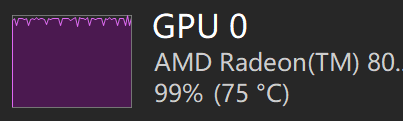
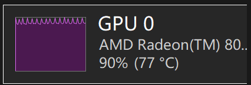

本地模型性能翻倍！qwen3.6-MTP测试
前言
2026年5月17日，本地模型爱好者们迎来了一个喜大普奔的时刻，llama.cpp 的 #22763 终于合入，这意味着 MTP 正式在 llama.cpp 中可用了。
如果你不知道 MTP 是什么，可以自己去找资料，这里我只说最终效果：
MTP 能让本地模型在几乎没有精度损失的情况下，生成 token 的速度翻倍！
本文就来进行一下非专业测试，看看效果到底如何。
⚠️ 注意：本文未使用任何基准测试，测试结果仅代表当前测试环境及本次测试场景的执行效果，不具有通用性。
测试环境
| 项目 | 配置 |
|---|---|
| CPU/GPU | AMD AI Max+ 395 |
| 系统 | Windows 11 |
| 内存 | 128GB（分给显存 64GB） |
| llama.cpp 版本 | llama-b9190-bin-win-vulkan-x64 |
| 量化级别 | Q4_K_XL（XL 版本比 M 和 S 慢一些，但更准确） |
| 思考模式 | 关闭 |
测试模型
测试请求
使用 curl 发起相同测试请求：
curl.exe -X POST "http://127.0.0.1:8001/v1/chat/completions" -H "Content-Type: application/json" -H "Authorization: Bearer sk-no-key-required" -d '{"model":"test","messages":[{"role":"user","content":"生成一个端午节的网页，鼠标可以点击，有动效"}],"max_tokens":256000,"stream":false}'
测试结果
Qwen3.6-35B-A3B（MoE 模型）
| 版本 | SPEC_DRAFT_N_MAX | 输出速度 | 提升幅度 |
|---|---|---|---|
| 非 MTP | - | 52.77 t/s | 基准 |
| MTP | 2 | 61.52 t/s | +17% |
| MTP | 3 | 61.83 t/s | +17% |
| MTP | 4 | 56.91 t/s | +8% |
结论：35B-A3B 模型开到 SPEC_DRAFT_N_MAX=3 效果最佳，但提升幅度有限。（测出这个结果，我当时是很失望的，原本以为能破百）
Qwen3.6-27B（稠密模型）
| 版本 | SPEC_DRAFT_N_MAX | 输出速度 | 提升幅度 |
|---|---|---|---|
| 非 MTP | - | 11.79 t/s | 基准 |
| MTP | 2 | 21.97 t/s | +86% |
| MTP | 3 | 23.30 t/s | +98% |
| MTP | 4 | 26.30 t/s | +123% |
| MTP | 5 | 25.73 t/s | +118% |
结论：27B 模型开到 SPEC_DRAFT_N_MAX=4 效果最佳，提升幅度相当可观！
汇总分析
在当前测试条件下：
- 27B 模型：SPEC_DRAFT_N_MAX=4 时速度最快
- 35B-A3B 模型：SPEC_DRAFT_N_MAX=3 时速度最快
不过最近我看了不少其他人的测试，发现 SPEC_DRAFT_N_MAX 这个参数的大小，对于不同模型和不同的量化版本，以及不同长度的上下文，甚至在不同的硬件设备上，性能曲线都不一样：
- 有的没提升
- 有的甚至负提升
- 有的能提升150%
- 也有的开到1就已经是最高的性能了
综合来看，SPEC_DRAFT_N_MAX=2 目前似乎是大多数人都认可的一个甜点位，不一定是性能最好，但可以无脑配置。
💡 对于刚需使用者而言，如果真想获得最极致的性能，与其花时间去测试去调参数，还不如去买几张 N 卡划算得多。
GPU 利用率观察
测试时，意外发现 GPU 利用率有差异：
| 模型 | 非 MTP 版本平均 GPU 利用率 | MTP 版本平均 GPU 利用率 | MTP 版本最高 GPU 利用率 |
|---|---|---|---|
| Qwen3.6-35B-A3B | 86% | 72% | 86% |
| Qwen3.6-27B | 98% | 90% | 98% |
可以很明显地观察到：
- MTP 版本的 GPU 利用率相比非 MTP 版本有所下降
- 但峰值是差不多的
- 在 GPU 利用率下降的情况下，吐的 TOKEN 反而变多了
从另一方面看，GPU 并没有火力全开，应该还有提升空间。
从这个利用率的波形也能明显发现区别，明显是新增了不同类型的运算负载，这和MTP目前的实现方式有关，具体我就不展开了（其实是我也没研究透，怕说错...）


附：MTP 使用方式
以 Windows AMD 显卡环境为例：
1. 下载 MTP 模型
💡 GGUF 并不能在原本的模型上直接开启 MTP，需要一个新的模型文件。建议通过 LM Studio 搜索下载，可以避免国内 HuggingFace 无法连接的问题。
2. 下载 llama.cpp
⚠️ 根据网友们反馈，目前 llama.cpp 的最新版性能反而不及#22763刚合并时的版本
3. 解压安装包
注意根据你的平台架构选择，这里我用的是 "Windows x64 (Vulkan)"
⚠️ 至少这个时间点上，ROCm 在 Windows 上绝对不建议用于文本生成
4. 创建启动脚本
在 llama.cpp 解压后的目录里创建启动 bat 脚本（可根据需要自行调整参数）：
@echo off
setlocal EnableExtensions EnableDelayedExpansion
REM Run from this script's directory so relative executable paths always work.
cd /d "%~dp0"
REM =========================
REM Model files (local paths)
REM =========================
set "MODEL_DIR=%USERPROFILE%\.lmstudio\models\unsloth\Qwen3.6-27B-MTP-GGUF"
set "MODEL_FILE=%MODEL_DIR%\Qwen3.6-27B-UD-Q4_K_XL.gguf"
set "MMPROJ_FILE=%MODEL_DIR%\mmproj-F32.gguf"
REM =========================
REM Server settings
REM =========================
set "HOST=127.0.0.1"
set "PORT=8001"
set "ALIAS=unsloth/Qwen3.6-27B-MTP-GGUF"
set "CTX_SIZE=262144"
set "N_GPU_LAYERS=999"
set "BATCH_SIZE=2048"
set "N_PARALLEL=1"
REM Recommended non-thinking defaults from Unsloth guide.
set "TEMP=0.7"
set "TOP_P=0.8"
set "TOP_K=20"
set "MIN_P=0.00"
set "PRESENCE_PENALTY=1.5"
REM MTP settings:
REM New flag (May 2026+) is --spec-type draft-mtp.
REM Unsloth notes draft-n-max=2 often gives best real speed/acceptance tradeoff.
set "SPEC_TYPE=draft-mtp"
set "SPEC_DRAFT_N_MAX=2"
REM Qwen3.6 reasoning mode control (new flag).
REM Use off for non-thinking mode; change to on if needed.
set "REASONING=off"
REM Auto-detect multi-slot flags:
REM N_PARALLEL > 1 => enable --kv-unified and --cache-idle-slots
REM N_PARALLEL = 1 => no extra flags (avoids "requires --kv-unified" warning)
set "EXTRA_FLAGS="
if %N_PARALLEL% GTR 1 (
set "EXTRA_FLAGS=--kv-unified --cache-idle-slots"
)
echo.
echo [INFO] Starting llama-server for Qwen3.6 27B MTP...
echo [INFO] Endpoint: http://%HOST%:%PORT%/v1
echo [INFO] Model: %MODEL_FILE%
echo [INFO] MMProj: %MMPROJ_FILE%
echo.
if not exist "%MODEL_FILE%" (
echo [ERROR] Model file not found:
echo %MODEL_FILE%
exit /b 1
)
if not exist "%MMPROJ_FILE%" (
echo [ERROR] MMProj file not found:
echo %MMPROJ_FILE%
exit /b 1
)
if not exist "llama-server.exe" (
echo [ERROR] llama-server.exe not found in:
echo %CD%
exit /b 1
)
llama-server.exe ^
--host %HOST% ^
--port %PORT% ^
--model "%MODEL_FILE%" ^
--mmproj "%MMPROJ_FILE%" ^
--alias "%ALIAS%" ^
--gpu-layers %N_GPU_LAYERS% ^
--flash-attn on ^
--kv-offload ^
--batch-size %BATCH_SIZE% ^
--parallel %N_PARALLEL% ^
%EXTRA_FLAGS% ^
--ctx-size %CTX_SIZE% ^
--temp %TEMP% ^
--top-p %TOP_P% ^
--top-k %TOP_K% ^
--min-p %MIN_P% ^
--presence-penalty %PRESENCE_PENALTY% ^
--spec-type %SPEC_TYPE% ^
--spec-draft-n-max %SPEC_DRAFT_N_MAX% ^
--image-min-tokens 1024 ^
--reasoning %REASONING%
set "EXIT_CODE=%ERRORLEVEL%"
echo.
echo [INFO] llama-server exited with code %EXIT_CODE%.
exit /b %EXIT_CODE%
5. 启动服务
双击执行这个 bat 脚本即可。
6. API 测试
curl.exe -X POST "http://127.0.0.1:8001/v1/chat/completions" -H "Content-Type: application/json" -H "Authorization: Bearer sk-no-key-required" -d '{"model":"unsloth/Qwen3.6-27B-MTP-GGUF","messages":[{"role":"user","content":"返回测试成功"}],"temperature":0.7,"max_tokens":256000}'
其他MTP使用方案
- 如果你有 NVIDIA 显卡，或者是 AMD 显卡跑在 Linux 上，可以用 Unsloth Studio，这个软件已经把 MTP 都配置好了。
- 截止本文发布，LM Studio 0.4.14 测试版（runtime vulkan llama.cpp 2.15.0 测试版）已经支持 MTP 了，只是我实测下来性能不如直接用llama.cpp。
最后说下
这里绝不包含任何购买建议，只是个人感想：
我这台AMD AI MAX+395 笔记本上个月一万多买的，现在京东已经涨到三万了。
真正用下来，显存的确是量大管饱，但显存带宽是远不及N卡和MAC的，模型测了一堆，快的模型蠢，聪明的模型慢，Qwen-27B算是最能打的了，只是11t/s的速度接到编程agent里实在太慢，有些agent还自带超时重试，这机器可顶不住并发，更别说预填充阶段那蜗牛一样的速度了。
前一段时间MAC和N卡各种黑科技提升性能，AMD这边都不能用，我甚至一度想再重新组一台带N卡的服务器，但看到价格、体积、运行噪音，还是迟疑了。
但现在有了MTP，跑Qwen-27B能有二十几个TOKEN每秒，这也算是真正能干活了。
不过如果让我再选一次跑本地模型的机器，我可能会买N卡。